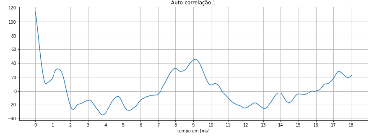

Atividade 5
Características Tempo e Frequência da Voz
1 - Separação de uma Estrofe
A partir da gravação das frases, o objetivo dessa parte é separar uma estrofe da frase total a partir da forma de onda:
i. Frase completa e forma de onda:
- Beatriz

- Caleb

- Vitor

ii. Hamming
-Hamming Beatriz

-Hamming Caleb

-Hamming Vitor

iii. Primeira estrofe e forma de Onda
- Beatriz

- Caleb

- Vitor

2 - Cálculo dos Parâmetros LPC, separação U/UV e Espectro + Envoltória LPC
i. Energia da voz da primeira estrofe:
- Beatriz

- Caleb

- Vitor

iii. Gravação do verso de Camões
Comparando o espectrograma de dois integrantes:
- Beatriz
Microfone capacitivo Behinger

Microfone dinâmico Shure

- Vitor
Microfone capacitivo Behinger

Microfone dinâmico Shure

Pode-se perceber algo similar ao que ocorreu na música, os áudios da integrante Beatriz variam mais em frequência ao longo do tempo, não tendo uma em específico onde ocorre. Os áudios do integrante Vitor também variam, mas apresentam uma tendência maior nas frequências mais baixas
iv. Gravação da música

Fonema Ca de (Voz do Caleb): Consoante Surda Plosiva

Pitch Caleb: 1,51 ms
Frequência Fundamental Caleb: 662 Hz
Fonema Be de (Voz Beatriz): Consoante Sonora

Fonema Si de (Voz Beatriz): Consoante Surda

3 - Prosódia
A prosódia define e reune as características da emissão dos sons ao falar, como acento, entonação de voz e tonalidade, até mesmo timbre do indivíduo.
como o acento e a entoação Qual a
diferença entre voz falada normal, em verso, ou em música neste conceito?
R: Podemos verificar a diferença entre os dois observando que voz falada normal não apresenta muita variabilidade tonal, tal como a voz em verso, diferentemente da voz cantada. Já em questão de ritmo é um pouco mais complexo, cada língua pode apresentar um ritmo diferente. Geralmente, divide-se em ritmo silábico, moraico e acentual. Isso para voz falada, para voz em verso ou cantada, os processos são similares por conta das estruturas de tempo.
4 - Eletroglotograma
Não foi possível realizar o eletrograma devido tempo disponível para a realização do laboratório, bem como materiais.